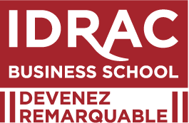
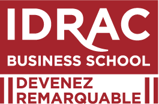

Vous êtes entre de bonnes mains, ne vous inquiétez pas !
Ce que l'on pense de moi
"Clémence s’est pleinement investie dans toutes les différentes missions qui lui ont été confiées, et ce, toujours avec dynamisme, rigueur et enthousiasme. Elle nous a montré́ des qualités d’autonomie, d’adaptation, et de conscience professionnelle. Elle est patiente, dans le partage, et à l’écoute des besoins tant des clients internationaux que de ses collègues"
- Laurent Dubois - Sales Manager - Louis Vuitton -
"J’ai eu un réel plaisir de l’avoir comme étudiante à l'IDRAC en Management. Clémence est une étudiante qui s’est vite démarquée par sa rigueur, son sérieux et sa motivation en menant de front pendant ces trois années sa formation théorique avec d’excellents résultats dans l’ensemble des matières"
- Dominique Arnoux - Professeur de Management -